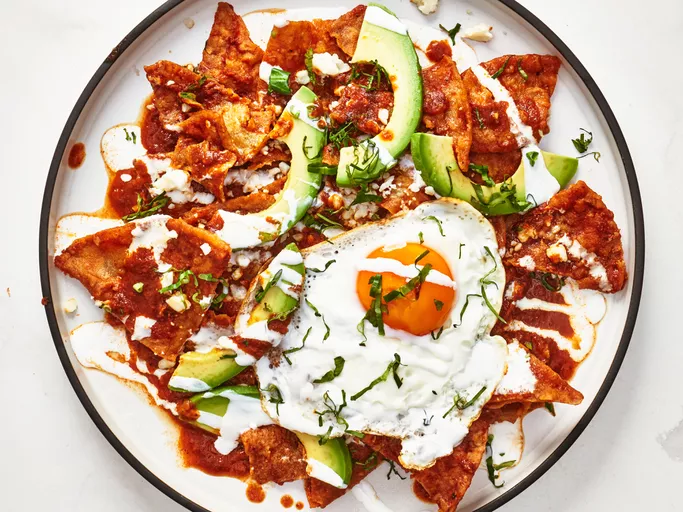

Roscoe's Chilaquiles

Description
Roscoe's chilaquiles are a stunning Mexican breakfast of crisp tortilla chips in a traditional salsa roja, topped with a fried egg, crema, and avocado.
Ingredients
- Salsa Roja
- 3 guajillo chile peppers, seeds removed
- 1 ancho chile pepper, seeds removed
- 4 cups boiling water
- 4 Roma tomatoes, quartered
- 1 white onion, quartered
- 3 garlic cloves, peeled
- 2 tablespoons olive oil
- 1 beef bouillon cube
- 2 culantro leaves
- 1 lime, juiced
- salt and freshly ground black pepper to taste
- Chilaquiles
- 2 1/4 cups oil, divided
- 12 soft corn tortillas, cut into 8 wedges each
- 4 large eggs
- 1/4 cup Mexican crema, or as needed
- 1/2 cup crumbled cotija cheese
- 1 avocado, sliced, or to taste
- 1/4 cup cilantro leaves, or to taste
- 1 lime, quartered
- 1/4 teaspoon Mexican oregano, or to taste
Steps
- For salsa roja, pour boiling water over peppers and let sit until softened, 15 to 30 minutes.
- Meanwhile, add 2 tablespoons olive oil to a skillet over high heat, and sear tomatoes, onions, and garlic until charred for about 2 minutes.
- Place softened peppers, charred vegetables, and 1 cup of the chile soaking water in a blender. Reserve remaining 3 cups chile water. Blend until smooth. Strain the sauce; pour back into the pan.
- Cook sauce over medium heat, scraping any charred bits from the bottom of the pan; add 2 cups of remaining chile water. Simmer until sauce is reduced by 1/3. Stir in bouillon cube and last 1 cup chile water, culantro leaves, lime juice; stir until bouillon cube dissolves. Season with salt and pepper.
- For chilaquiles, heat oil to 350 degrees F ( 175 degrees C) in a large saucepan over medium heat. Add tortillas and fry until crisp and golden. 2 minutes per batch.
- For each serving, heat 1 tablespoon oil in a small nonstick pan over medium heat. Crack an egg into the skillet, and cook until outer edges become opaque, about 1 minute. Turn egg over and cook until whites are completely opaque, 1 to 2 minutes more.
- Add a handful of chips to the salsa roja, and turn to coat completely. Remove to a serving plate with a slotted spoon.
- Drizzle with crema, top with an egg, cotija cheese, avocado, cilantro, squeeze of lime juice, and drizzle with more salsa roja. Sprinkle with oregano. Repeat with remaining ingredients.